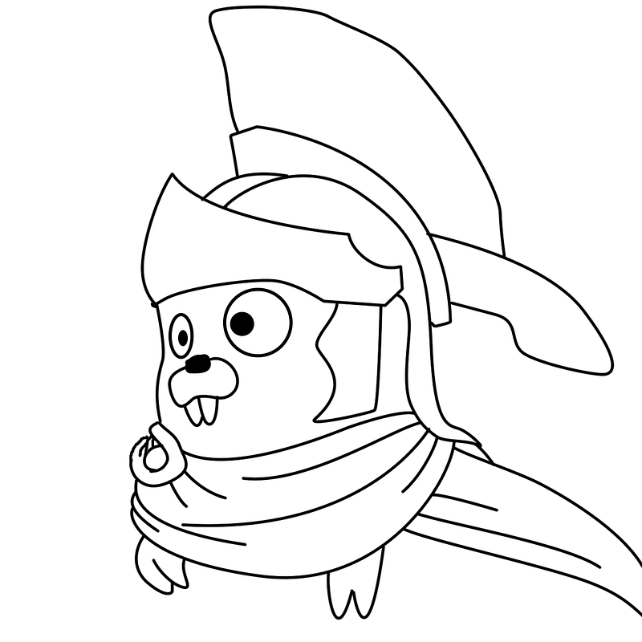
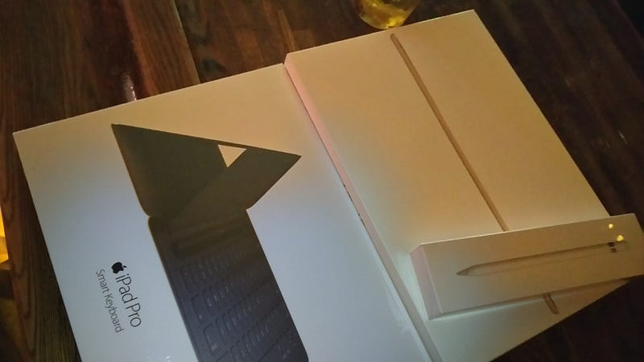
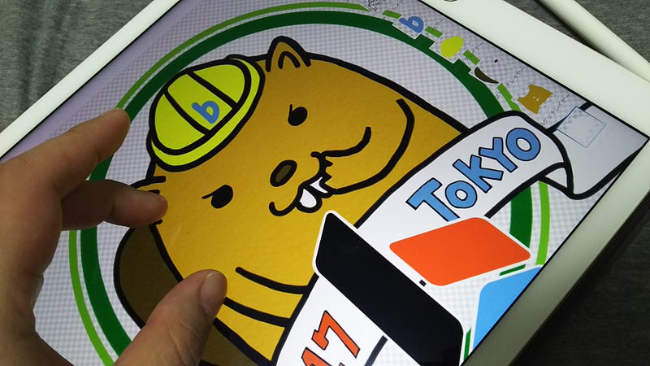

iPad ProとApple Pencilでお絵かきエンジニアにジョブチェンジした
iPad ProとApple Pencilでお絵かきエンジニアにジョブチェンジした
これまでもチョコチョコ軽い絵を描いて何かを説明したりする機会はあったりしたけれど、最近ちょっとしたカットを描いたり、デザインの下絵を描いたりすることが多くなってきた。builderscon でもちょこちょこ細かい絵は描いているし「いや、僕本業プログラマなんですけどね…」ということが最近結構あるのです。
これまではAdobe Photoshopを使って、トラックパッドを使いつつパスを引き、それをブラシで主線等に変換したりしつつ絵を描いてた。しかしフリーハンドっぽい線はどうしても難しい！

Photoshopにすでに登録されてるシンプルな図形をベースにするように、すでに均整の取れた形をベースに描くのはそれほど難しくないが、柔らかい曲線をパスで表現するのは無理がある。かといって、トラックパッドで美しい曲線はどうやっても引けない…
そういうわけでもう今後の事も考えると、Intuosか何かを買ってしまおうかと画策してた。
新次元のプロフェッショナルペンタブレット◆理想の作業環境をその手に高精細のWacom Pro Pen 2搭載、コンパクトなデザインと快適な描画スペース、USBケーブルまたは内蔵Bluetoothで接続。◆新しいWacom Pro Pen…amzn.to
妹がそういうPCお絵かきを昔からやってるので色々聞いてみたり、実機を触ったりしてみたが、ひとつ大きな問題にぶちあたってしまった。自分は基本Macbook Proを背負ってどこでも作業をできるようにしている。
会社に勤めてても外のアポに行く事もあるし、自分の机よりはフリースペースっぽいところで作業しがちだ。そうなってくると、ただお絵かきのためにタブレットを持ち歩くだろうか…？いや、持ち歩かないね。よしんば持ち歩いてもなかなか取り出さないのは目に見えてる。
そんなおり、大分前からウチの妻が最強のKindleリーダーとして使っているiPad Proでも（今更だが）お絵かきができるはずだと気づいた。それではとAdobe Sketchをインストールし、まずは指で直に書く場合の書き心地をしばらく試してみた。予想以上にいける。
iPadだと他の事にも使える（主にKindleリーダーとWebビューアー）… 予算はある… Apple Pencilを使うとさらに良い感じにお絵かきできそう…
買うか！買いたい時が買い時！ということで先日買った。iPad Pro Wi-Fiモデル256GB、Apple Pencil、そしてついでにキーボードも。
タブレットPCをお探しなら低価格・豊富な品ぞろえのAmazon.co.jpで、iPad Pro 12.9インチ Retinaディスプレイ Wi-Fiモデル ML0V2J/A （256GB・ゴールド）を通販でいつでもお安く。アマゾン配送商…amzn.to
オンライン通販のAmazon公式サイトなら、Apple Pencil MK0C2J/Aを パソコン・周辺機器ストアで、いつでもお安く。当日お急ぎ便対象商品は、当日お届け可能です。アマゾン配送商品は、通常送料無料。amzn.to
反応の良いキータッチで正確に入力でき、汚れにくくなっていますフルサイズのキーボードが必要な時はSmart Keyboardを広げるだけ。不要な時は、折りたたむだけでスリムで軽いカバーになります。特別に作られたファブリック素材でキーボード…amzn.to

本当はAppleのサイトから買おうと思ったんだけど、お届けに2〜3週間とか言われたのでカッとなって渋谷のAppleストアで買った。
というわけで私、人生初のペンタブ画です。いやー、きもちいい〜。
Adobe Sketchも機能的にどうかなーとは思っていたのだが、基本のお絵かきはとても気持ち良い。ブラシのセットをカスタマイズしておきたいけどできるのかわからないのと、色をスポイトツールでコピーしたいけどやりかたがわからないのが今のところ不満だけど、あとはだいたい問題無し。
微妙なのがApple Pencilで、このコネクタどうやって保存しとけって言うんだ、とか、充電中は使えないとかどういうこっちゃ！とか細かい不満はある。が、それでもこのお絵かきエクスペリエンスのすばらしさの方がまだ勝つ。
ちなみにコネクタとかの事に関しては一応解決したくて以下を購入した。まだ届いてないからどれだけ使えるのかわからないけど。
昔は常にノートを持ってあちこちで絵を描いていたけど、そんなことはしなくなって20年。なんか久しぶりに気兼ねなくいつでも絵を描ける環境を手に入れられた。ラフなスケッチも描ければ、ちょっと本腰を入れれば素人なりにキレイな絵も描ける。消しゴムカスも出ないし、絵の細部に手を入れる時のズーム制御も指でできるし、Adobeのアカウントでデータの共有はできてるし、できあがった絵はDropboxやAirdropで共有したりもできるし、わりと最高である。

もちろんプロの人にとってはまた別の代物なんだろうけど、自分みたいな微妙に絵をかじった程度だと、「とにかくすげー」としか言いようのないアイテムを購入してできてよかったよかった。